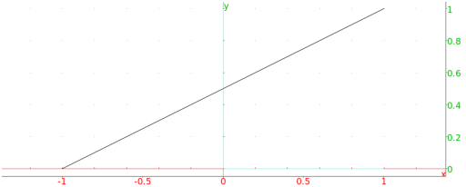

13.7.3 Line segments in the plane: segment Line
See Section 14.5.3 for segments in space.
The segment command draws line segments.
(The segment command can also draw vectors (see
Section 13.7.4.)
-
segment takes two arguments:
P,Q, two points (which can also be given as a list).
- segment(P,Q) returns the corresponding line
segment and draws it.
The Line command also draws line segments, with a slightly
different syntax.
-
Line takes four arguments:
a,b,c,d, four real numbers.
- Line(a,b,c,d) returns and draws the line segment
from (a,b) to (c,d).
Example
Input:
segment(-1,1+i)
or:
segment(point(-1),point(1,1))
or:
Line(-1,0,1,1)
Output:
